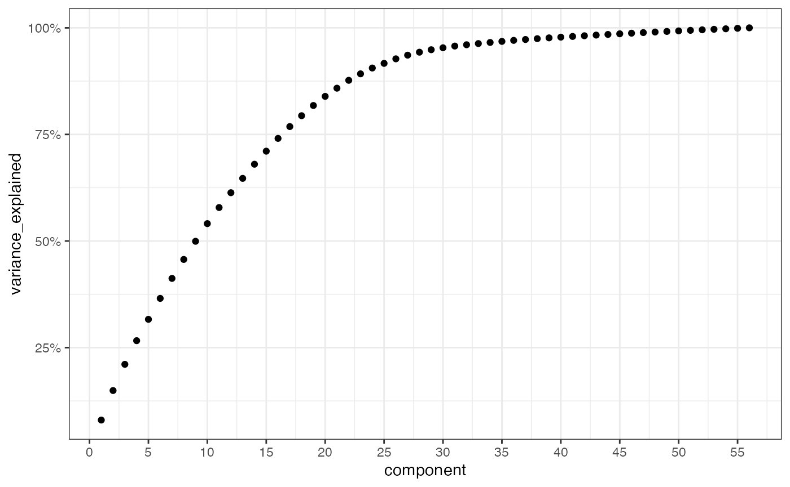

Using liminal to understand high dimensional parameter space
Source:vignettes/geometry_parameter_space.Rmd
geometry_parameter_space.RmdThis example is modified from the examples tours described in Cook, Laa, and Valencia (2018). Here we use a tour to explore principal components space and any non-linear structure and clusters via t-SNE.
Setting up the data
Data were obtained from CT14HERA2 parton distribution function fits as used in Cook, Laa, and Valencia (2018). There are 28 directions in the parameter space of parton distribution function fit, each point in the variables labelled X1-X56 indicate moving +- 1 standard deviation from the ‘best’ (maximum likelihood estimate) fit of the function. Each observation has all predictions of the corresponding measurement from an experiment. (see table 3 in that paper for more explicit details).
The remaining columns are:
- InFit: A flag indicating whether an observation entered the fit of CT14HERA2 parton distribution function
- Type: First number of ID
- ID: contains the identifier of experiment, 1XX/2XX/5XX corresponds to Deep Inelastic Scattering (DIS) / Vector Boson Production (VBP) / Strong Interaction (JET). Every ID points to an experimental paper.
- pt: the per experiment observational id
- x,mu: the kinematics of a parton. x is the parton momentum fraction, and mu is the factorisation scale.
First, we take the load the data as a data.frame:
Linear embeddings and the tour
First we can estimate all nrow(pdfsense) principal components using on the parton distribution fits:
Using this data structure, we can produce a screeplot:
res <- data.frame(
component = 1:56,
variance_explained = cumsum(pcs$sdev / sum(pcs$sdev))
)
ggplot(res, aes(x = component, y = variance_explained)) +
geom_point() +
scale_x_continuous(
breaks = seq(0, 60, by = 5)
) +
scale_y_continuous(
labels = function(x) paste0(100*x, "%")
)
Approximately 70% of the variance in the pdf fits are explained by the first 15 principal components.
Next we augment our original data with the principal components:
pdfsense <- dplyr::bind_cols(
pdfsense,
as.data.frame(pcs$x)
)
pdfsense$Type <- factor(pdfsense$Type)We can view a simple tour vialimn_tour() and color points by their experimental group
limn_tour(pdfsense, PC1:PC6, Type)Non-Linear embeddings
Now we can set up a non-linear embedding via t-SNE, here we embed all 56 principal components.
set.seed(3099)
start <- clamp_sd(as.matrix(dplyr::select(pdfsense, PC1, PC2)), sd = 1e-4)
tsne <- Rtsne::Rtsne(
dplyr::select(pdfsense, PC1:PC56),
pca = FALSE,
normalize = TRUE,
perplexity = 50,
exaggeration_factor = nrow(pdfsense) / 100,
Y_init = start
)Once we have run t-SNE we tidy it into a data.frame, to perform a linked tour.
tsne_embedding <- as.data.frame(tsne$Y)
tsne_embedding <- dplyr::rename(tsne_embedding, tsneX = V1, tsneY = V2)
tsne_embedding$Type <- pdfsense$TypeWe can view the clusters using a static scatter plot:
ggplot(tsne_embedding,
aes(x = tsneX, y = tsneY, color = Type)) +
geom_point() +
scale_color_manual(values = limn_pal_tableau10())
We can link a tour view next to the embedding to give us a clear picture of the clustering:
limn_tour_link(
tour_data = pdfsense,
embed_data = tsne_embedding,
cols = PC1:PC6,
color = Type
)References
Cook, Dianne, Ursula Laa, and German Valencia. 2018. “Dynamical projections for the visualization of PDFSense data.” European Physical Journal C: Particles and Fields 78 (9): 742. https://doi.org/10.1140/epjc/s10052-018-6205-2.